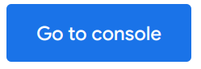

Long gone are the days where your IT projects required expensive home labs. There are more cloud options now than ever before. The two best known ones are Amazon AWS and Microsoft Azure, but there are many smaller players in the market as well. For my purposes cost is the primary concern. At the time of this project, Google has a 3 month free trial.
Once we log in, follow the steps below:
Click on “Go to console”
Expand the navigation menu
Click firewall under VPC network
Click “CREATE FIREWALL RULE”
Some fields we are going to fill out are the same across every rule we create,
so let’s go over them here.
Name: can include lowercase, numbers and hyphens. Can’t include uppercase,
special characters or spaces.
Description: A brief description of what the firewall rule is supposed to do.
Logs: We can leave these off to preserve space and minimize on costs, but we will
lose potentially useful information when it comes to defending against and investigating attacks.
Network: We can leave this as default.
Priority: Refers to the order in which the rules are implemented, as we are only
making a few rules and
they aren’t conflicting, we can just put 1000 for all 3 rules we are going to make.
The default priority for Google’s rules are 65534.
Direction of traffic: Ingress means connections coming in, outbound means connections
leaving the server. Our rules are dealing with ingress.
Since TPOT changes the default connection settings, we need to enable TCP forwarding using IAP. Google has a great write up, available here.
Google's rules are setup for the default ports for SSH(22) and RDP(3389). We'll substitute port 22 for 64295 since TPOT changes the default SSH port. We can omit port 3389 as we aren't setting up a remote desktop connection.
This rule will give us access to ssh from putty or our terminal and access to our dashboard from our internet browser.To make sure we're the only ones who can access our services, we're going to limit the incoming ip range to our own ip address. We can get our ip address from a simple search with your preferred search engine. We use the obtained ip with CIDR 32. That would look something like 192.168.1.2/32. For ports we specify 64294(Cockpit), 64295(ssh) and 64297(dashboard).
Since we want hostile actors to attack our honey pot so we can study them, we need to let them through the firewall to TPOT. The ip range needs to allow all, so for the range we enter 0.0.0.0/0 The TPOT documentation recommends ports 1-64000 be open for both TCP and UDP. That will give attackers access to our honeypot, but not our SSH or dashboard.